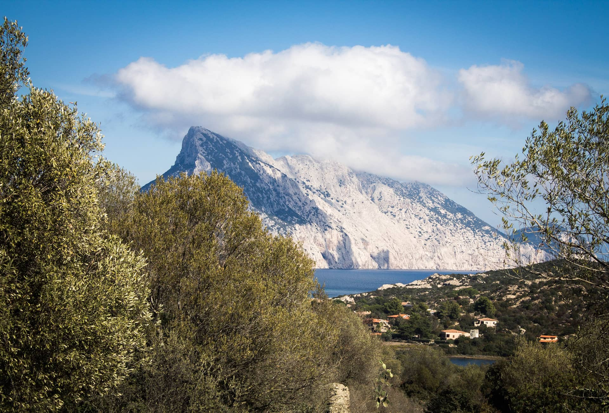

Подготовка к поездке

Итак, начну по возможности краткое повествование о своей поездке в Европу на своём автомобиле Toyota Corolla в Октябре 2017 года.
Перед выездом я прочел немало отчетов автотуристов, чтобы хоть примерно представлять к чему готовиться, за что выражаю им благодарность. Особенно хочу отметить труды автопутешественницы Mari-Zaychik . Затем я составил примерный маршрут поездки и определил основные достопримечательности, которые хотелось бы увидеть, и места остановок для ночлега.
Далее следовали подготовка документов и получение шенгенской визы. Грин-карту на 30 дней действующую на всей территории Европы я сделал заранее, чтобы предъявить в визовый центр. Через две недели надпись Виза красовалась в моем загранпаспорте.
В качестве подготовки к автопробегу машине была проведена замена масла и фильтров. Канистру с собой брать не стал. По отзывам автопутешественников экономия не большая, а место занимает, и вероятность запаха бензина в автомобиле увеличивается. Не забыл световозвращающий жилет, запасные лампочки, лекарства, влажные салфетки, термос, бутерброды ну и обменял рубли на евро, чтобы наличность всегда была в кармане.
Для навигации я выбрал две системы: по России – Яндекс Навигатор — проверенное отличное приложение, а по Европе многие рекомендовали Maps Me, правда некоторые не советовали использовать его на автомобиле и я позже пожалел, что не учел эти отзывы. Забегая вперед скажу Maps Me периодически доставлял мне проблем в Европе. В частности один раз он зачем то увёл меня с автобана в ближайший городок, покатал по нему и вернул меня обратно на автобан. Дальше Я стал внимательно смотреть, как он прокладывает маршрут, а на обратном пути вообще отказался от него и стал использовать приложение Google карты. Это приложение я могу спокойно рекомендовать, но необходимо иметь интернет в навигационном устройстве.
Отправление
Отправление планировалось 3 Октября в 6 утра, но сборы затянулись, и выезд из Ульяновска состоялся в 8 часов утреннего час-пика. Проехав небольшие пробки в городе навигатор повел меня к столице, до которой оставалось около 900км. В Москве я запланировал остановку в районе Москва-Сити, чтобы сделать фотографии, но приезд оказался на темное время суток, и было решено проехать столицу по МКАДу без остановки. Ночлег планировался спустя 1200км в гостинице Буржуй г. Можайска, куда я благополучно прибыл поздно вечером. На следующее утро после включенного завтрака проверка уровня масла и дальше в дорогу. Следующий длительный отдых запланирован в Минске у здания национальной библиотеки. Факт проезда границы РФ и Беларуси заметил только благодаря соответствующим указателям. Никаких остановок и проверок. Дорога в Беларуси порадовала и качеством покрытия и наличием двух полос в каждую сторону и конечно разрешенной максимальной скоростью до 120км/ч для легковых автомобилей почти на всем протяжении. Примерно в полдень я въехал в Минск. И опять меня порадовало ограничение скорости. В городе на моем пути оно было 80 км/ч. Быстро доехал по навигатору до Национальной библиотеки, сделал несколько снимков и рядом нашел обменный пункт, где приобрел беларуских зайчиков.
Минск - Варшава
Сильный холодный ветер не позволил долго гулять и я поторопился в дорогу, чтобы успеть на ночлег в Брест.
Проезжая по центральной дороге Минска я был удивлен архитектурой города. Вдоль протяженной широкой дороги
слева и справа стояли различные громоздкие здания. И все это казалось беcконечным.
В Беларуси у меня никакой связи кроме автомобильной радиостанции не было, и wi-fi на заправках не попадался.
Сообщить домой о своем местонахождении удалось только из гостевого дома в Бресте.
«Окно в Европу», т.е. польскую границу, решено было проходить рано утром в расчете на то, чтобы успеть
пересечь всю Польшу без ночёвки. О чём после пожалел т.к. из-за большой очереди я потратил на пересечение
4-5 часов. На обратном пути я потратил всего час проезжая границу поздно вечером.
Итак, непосредственно перед границей заправился «под горлышко» белорусским бензином и в 08:00 по московскому
времени стоял в очереди, чтобы заехать в отстойник, в который я заехал только через 2 часа. В отстойнике
дело пошло быстрее. Я только успел заказать и быстро съесть блинчики с ягодами. Перед таможенным контролем
потерял еще примерно час, простояв в небольшой очереди на «зеленый коридор»
Таможенный контроль заключался в том, что на линию запустили несколько машин, таможенник прошёл по ряду,
собрав паспорта и, вернувшись через 10 минут, раздал обратно паспорта, бегло окинул взглядом багажники и
открыл шлагбаум на следующий уровень – польскую границу.
Переехав мост и нейтральную территорию я оказался на польской стороне, уткнувшись в очередь примерно из семи
машин на каждой линии и примерно минут через 40 подошла моя очередь: к будке погранцов запускают по три
автомобиля от стоп-линии, подошла польская пограничница, взяла документы, безразлично осмотрела автомобиль,
попросив открыть некоторые сумки и ушла в будку, где я, дождавшись своей очереди, приложил большой палец к
какому то сканеру, затем получил свои документы. Далее, проехав до следующей будки, поговорил с работником
польской таможни о том что везу в машине (бензин, алкоголь, сигареты). Затем на пути был какой то пункт с
людьми в скафандрах, где я немного постоял не выходя из машины и, дождавшись открытия шлагбаума, выехал из
русскоговорящей территории, привет Европа, встречай русских автотуристов!
В каком то городе по пути в Варшаву постоял в пробках
А вот и сама Варшава.
Тоже одни пробки. На улице шел дождь и останавливаться погулять не хотелось. Проехал столицу Польши без остановок.
Сразу после Варшавы начинается платная прямая дорога до границы с Германией. По пути, как и по всей Европе регулярно встречаются организованные места для отдыха.
Так как я долго проходил польско-беларусскую границу, доехать в тот же день до запланированной гостиницы в Франкфурте-на-Одере я не успевал. Пришлось остановиться на ночлег на очередной заправке в Польше, где подключившись к вайфаю, я отменил бронь в германском отеле. Немного поспав в машине, рано утром мне все это надоело, и я отправился дальше в путь, когда еще было темно. Границу Польши с Германией проехал почти не заметив. Только дорожный знак с надписью Deutschland на синем фоне дал знать, что я уже в Германии. Как запланировал заехал в г. Фюрстенвальде, чтобы купить плакетку, которая разрешает заезжать в зеленые зоны.
Из за плохой погоды в Берлин решил не заезжать, а зарядил навигатор прямо в Марбург где меня ждали немцы-родственники. Так выглядят дороги Германии если съехать с автобана
Небольшой городок Марбург
В центре даже такого маленького городка почти везде платные парковки
Марбург - Париж
Встретившись с родственниками и отдохнув пару дней, я приготовился брать следующий город в соседнем государстве. Париж – дальнейшая точка моей поездки. Забронировал кемпинг под Парижем и, позавтракав, рано утром отправился к Наполеону в гости. Ничего нового на пути в Париж я не увидел. Все тот же автобан, а во Франции еще платные дороги. Надо сказать, что во Франции дороги подороже чем в Польше, а так же бензин дороже чем в Германии. Граница проезжается свободно, как и везде в Европе, правда перед границей, когда я остановился отдохнуть на заправке, ко мне подъехали германские пограничники и устроили полнейший обыск автомобиля. Вот это мне запомнилось надолго. Они открывали все сумки, что у меня были и все бардачки в автомобиле. Подробно расспрашивали о цели и маршруте поездки, и конечно же не везу ли я с собой оружие и наркотики. Хорошо, что у меня не было желания в тот момент шутить и ответить, что все это забыл дома. Дорога в Париж ничем не отличалась от дороги в Германии, только приходилось больше оставлять денег за платные дороги. Заехал в Париж рано утром, когда на улице не было машин и людей. Парковки до 7 утра еще пока бесплатные.
Покатавшись по Парижу я вспомнил, что надо еще успеть вернуться в Германию на самолет с родственниками в Италию. Вылет из Дюссельдорфа в 2 часа ночи и прилет на остров Сардиния через 2,5 часа. Глядя в иллюминатор казалось, что мы прилетаем в какую то Исландию. Повсюду из воды торчали черные мелкие островки.
Долго катались по острову в поисках фламинго и встретили их недалеко от пляжа когда их совсем не ждали ))
Лошади в Сан-Теодоро
Гора - остров
Back in Russia
10 дней любования пейзажами и отдыха на пляжах прошли, пора возвращаться в Германию. Отпуска у нас уже
заканчиваются.
Отдохнув пару дней, посмотрелись в зеркало и в путь домой!
Обратная дорога как всегда кажется быстрее, но заняла, почему-то на один день больше
Граница Польши и Беларуси. Приехал в 10 часов вечера, очередь – одна машина
Проехав границу и оказавшись в Беларуси, мгновенно появилось чувство, что я наконец-то дома. Везде написано
по-русски и люди выглядят и говорят по-русски. Тут же остановился отдыхать в том же гостевом доме в городе
Брест, где останавливался на пути в Европу. Хозяин дома через три недели меня даже и не узнал и не вспомнил
))).
Быстро пролетев Беларусь, заезжаю в Россию. На этот раз стоял пограничник и попросил предъявить
загранпаспорт. Остановка заняла несколько секунд.
На протяжении всего пути из Германии индикатор температуры на бортовом компьютере постепенно понижалась с
+15 до -3 и Россия встречала меня на летней резине уже со снегом.
Снова отдых в Можайске и в той же проверенной гостинице с расчетом, что в этот раз я попаду в Москву в
светлое время суток как и получилось.
Вот она запланированная фотография
Отпуск подходит к концу и поэтому, долго не задерживаясь в Москве, отправляюсь в Нижний Новгород для ночлега и прогулки. Это был самый тяжелый участок моей поездки. Я узнал, что такое пробка на трассе из Москвы в Пятницу.
Ну вот и всё. Теперь финишная дорога домой. Дорога была тоже не легкой, так как быстро стемнело и на дороге
было грязно, а в омывателе обычная вода из-за которой форсунки быстро замерзли и пришлось на заправке
покупать какую то сомнительную незамерзайку, которую дома уже заменил на купленную у проверенного продавца.
Домой приехал в где то 22:00 уставший и довольный :)
Подводя итог приведу некоторые цифры:
Пробег (туда-обратно) — 8 тыс. км;
Средний расход бензина — 6,5л;
Поломки — вибрация на скорости выше 120 из за плохой баллансировки колес;
Остановки полицейскими — 0;
Полученых штрафов — 0 (удивляюсь);
Автомоек — 0.
Всё